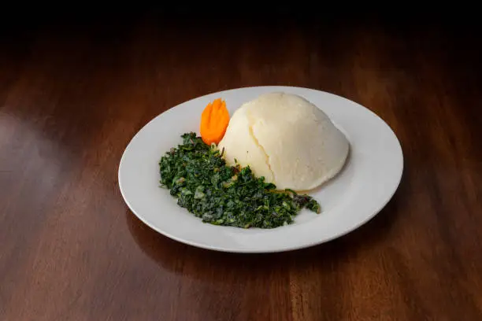

Home

Ugali
One of the most cooked dish in Sub-Saharan African countries
Ingredients
- 4 cups of maize flour
- 2 cups of water
- 2 table spoons of oil
Steps
- Boil water into the pot
- After water is boiled add flour slowly while mixing until it is cooked